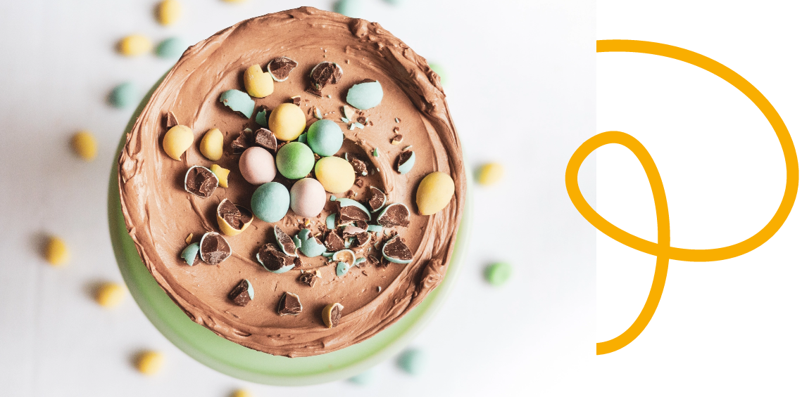

30 min de préparation / 30 min de cuisson
Le gâteau au chocolat de Pâques
30 min de préparation / 30 min de cuisson
Et si pour le week-end de Pâques on décidait de gâter toute la famille ? Quoi de plus évident que de cuisiner une recette gourmande… au chocolat ? Car oui, durant les réunions de famille, la gourmandise est de rigueur. Et fortement conseillée ! Pour se faire, Josette, 82 ans, a la recette parfaite pour faire plaisir à tous ses proches : le suprême gâteau au chocolat !
Bon à savoir : Mais pourquoi mange-t-on des œufs en chocolat à Pâques ? Fête religieuse, Pâques célèbre la fin du Carême. Traditionnellement, les Chrétiens avaient pour habitude de jeûner durant cette période (qui doit normalement durer 40 jours). Les œufs pondus tout au long des 40 jours n’étaient alors pas consommés, mais précieusement conservés. Mais pour éviter le gaspillage, il était de coutume de s’offrir ces précieux œufs le jour de Pâques et de les manger avec ses voisins et son entourage. Avec l’arrivée massive du chocolat en Europe, après le XVIIe siècle, les œufs ont été façonnés à partir de pâte à cacao. L’offrande était alors bien plus savoureuse en bouche. Et depuis cette époque, ils sont devenus petit à petit la symbolique de Pâques.
Pour 6 personnes, il vous faut
Pour la confection du gâteau :
• 150 g de beurre
• 170 g de sucre
• 150 g de farine
• 4 œufs
• 50 g de poudre de noisette
• 4 cuillères à soupe de cacao en poudre
• 1 cuillère à café de levure chimique
• 1 sachet de sucre vanillé
• 1 cuillère à soupe de lait
• 1 pincée de sel
Pour la confection de la ganache :
• 150 g de beurre
• 150 g de sucre glace
• 2 cuil. à soupe de lait
• 3 cuil. à soupe de cacao non sucré
• De l’extrait de vanille
• Des petits œufs de Pâques en chocolat ou autres chocolats de type Ferrero Rocher
Étapes
Pour réaliser le gâteau :
• Laissez le beurre ramollir avant de le fouetter énergiquement avec le sucre et le sachet de sucre vanillé.
• Ajoutez ensuite les œufs (un à la fois en mélangeant doucement), puis la cuillère à soupe de lait.
• Puis mettez les ingrédients secs : la farine, la poudre de noisette, le cacao en poudre, la levure chimique, ainsi que le sel.
• Enfournez le tout à 180°C pendant environ 30 min (surveillez la cuisson avec la pointe d’un couteau ; si elle ressort propre le gâteau est cuit, sinon on patiente encore un peu…).
Pour réaliser la ganache :
• Fouettez énergiquement le beurre avec le sucre glace.
• Une fois le mélange crémeux, ajoutez-y les 2 cuillères à soupe de lait, les 3 cuillères à soupe de cacao en poudre et un peu d’extrait de vanille. Fouettez le tout 2 ou 3 minutes encore.
• Coupez votre gâteau en deux par la longueur, étalez la ganache entre les deux parts du gâteau puis autour.
• Enfin disposez des petits œufs en chocolat sur le dessus. Amusez-vous !
L’anecdote de Josette
« Avec mon poulet-frites, c’est l’autre grand classique du week-end de Pâques que je confectionne pour toute ma famille. Un lundi de Pâques sans gâteau au chocolat n’est pas un vrai lundi de Pâques ! »
Je partage